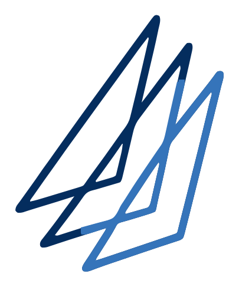

Compare the routes
Each route sailed in its own forecast: time on each point of sail, the most wind and sea it meets, and the work for the crew. Upwind is under 60° true wind angle, downwind over 120°.
Ask Route
For the route selected under Decision. Sails from the crossover chart in Settings.
Send to the crew
Sends a short summary (finish times, the first part of the plan) and a link that opens this course and start in Route on their phones. On a phone it opens the share sheet: choose WhatsApp, Messages or email. On a computer it opens WhatsApp in the browser, or use Copy text and paste it anywhere.
Put the route on the plotter or a chart app
Save GPX makes a route file with a waypoint at every turn: copy it to an SD card or USB stick for the plotter (How to load it gives the steps for your make). Save KML is the whole track for Google Earth. Open in chart app, on phones and tablets only, hands the file straight to GeoGarage, C-MAP, Navionics or any app that takes routes.
The file is a planning aid, not for navigation. GPX carries the route as waypoints at each turn plus the marks; KML shows the whole track in Google Earth and most chart apps.
B&G Zeus SR, Zeus S, Simrad NSS 4, NSX
- Copy the GPX to a microSD card or USB stick.
- Put it in the plotter, open the Waypoints & Routes app and choose Import routes.
- Follow the prompts and pick the file. Older Zeus 3 and 3S: Files, then pick the card and the file, then Import.
Raymarine Axiom (LightHouse)
- Copy the GPX to a microSD card.
- Homescreen, My data, Import/export, Import from card.
- Pick the card slot and the .gpx file, then OK.
Garmin
- Copy the GPX to a memory card and put it in.
- Where To, Menu, Manage User Data, Data Transfer, File Type: GPX.
- Then Import from the same Data Transfer menu.
GeoGarage, C-MAP, Navionics and other phone and tablet apps
- On a phone or tablet, tap Open in chart app and choose the app from the share sheet, or save the file to Files first.
- In the app, use its import or open file option if the share sheet does not offer it.
- If the app will not take GPX, try the KML.
Menu names change with software versions; if yours differ, look for Import in the plotter's user data or routes menu. Sources: Navico Waypoints & Routes guide (software 2.1), Raymarine LightHouse help, Garmin GPSMAP help.
AIS targets
Every IRC entry sailing your chosen route at its own TCC from its own class start: who should be near you at the slider time if they went the same way. Ranked on corrected time.
Sizes are compressed download sizes, already cut to the course band and race hours. Seabed depth is sent only where it is shallower than 20 m, and only needs downloading once per race area. Forecasts refresh every six hours.